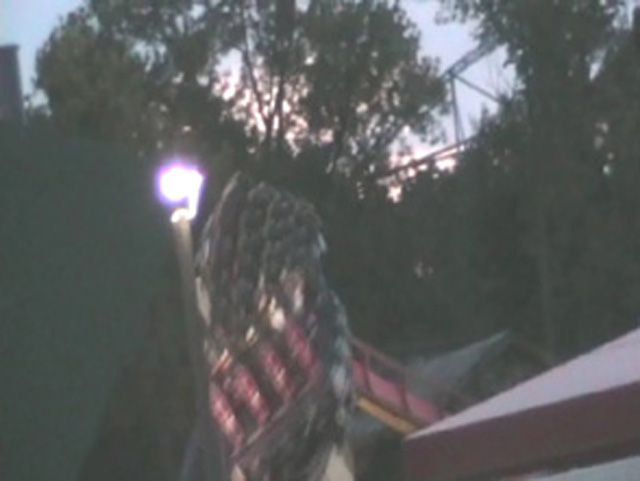
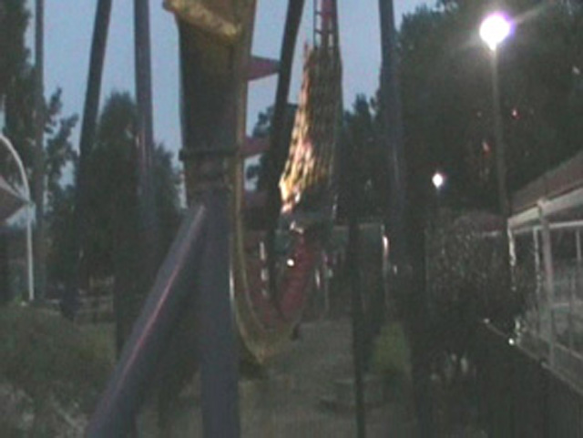
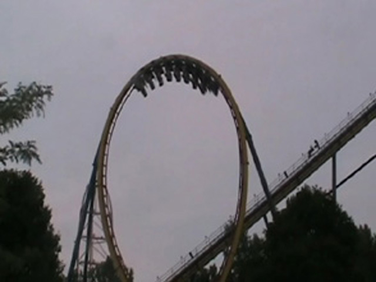
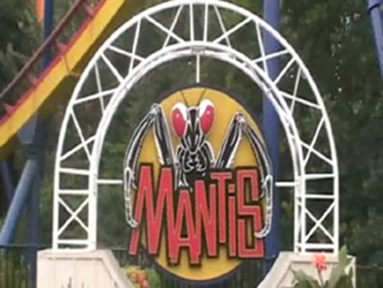

| |
Rougaru Review
We're here at Cedar Point. Today's ride we'll be reviewing for you is Rougaru. Now Rougarou opened up in 1996 as a B&M Stand Up coaster called Mantis. It was the first of the big Stand Up Coasters, and it certainly had a cool layout. But people did complain about how it hurt, and there was something about the ride. So in 2015, they gave it floorless trains, a badass paint job, and called it Rougarou. And while it is an improvement, it's not the amazing transformation that everyone was raving about. We hop in the seats, pull down the restraints, the floor drops, and we're off! We climb up the lifthill. Up and up we go! While climbing the lifthill, you get a nice view of Cedar Point. Then we finally reach the top. First you go through the pre drop and then turnaround. And then comes the first drop. It starts to go pretty fast, but not crazy fast. Floorless trains are lighter, so there's less speed. But at least the trims are gone. Then, after bottoming out on the first drop. We soar into a loop. Once we reach the point of upsidedown, we then soar back down to the ground and tilt a little for the dive loop. The dive loop is fun and all, butnothing special. We then soar up toards the station and do some sort of curve in the sky. I know people used to complain about headbanging here when this was Mantis. BULLSH*T!!! Mantis had problems, but headbanging wasn't one of them. After that, we head straight for the Incline Loop. This part of the ride is just really fun for some reason. I really like Incline loops, and it was cool to try one on a Floorless Coaster. I hope they can build a custom floorless coaster with an incline loop someday. Then you go through some twisty track before twisting up into the mid course brakes. The train doesn't slow down that much from it. So that's really cool. After the midcourse brakes, we slide into a corkscrew. After going through the final inversion, we then go up into a turnaround before going through more twisty track. Then the track gets kinda twisty from there. There are some banked curves, a hop over some track, and a turn into the brake run. Rougarou fun and all, but I'm not crazy about the whole conversion. I am one of the few enthusiasts who wants more stand up coasters to be built. Yeah, they're an improvement on Rougarou. I'm just really concerned about how "Floorless It!" is the new "RMC IT!!!" with some enthusiasts. I know it's only happened on 2 coasters. This, and Patriot. But don't they F*CKING DARE try to pull this sh*t on Riddlers Revenge (Thank god for Scream!) or Georgia Scorcher. Definetly try it out. It was fun as Mantis and almost certainly will be fun as Rougaru.
7/10
Location: Cedar Point
Opened as Mantis in 1996
Remodled as Rougaru in 2015
Built by: B&M
Last Ridden: June 24, 2018
Rougarou Photos


Mantis Photos




Home
|